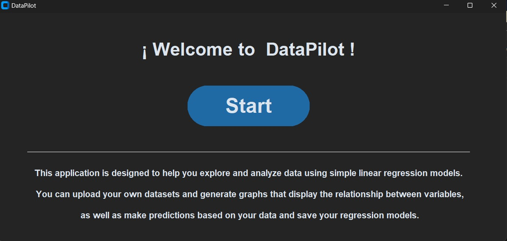
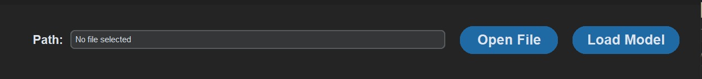
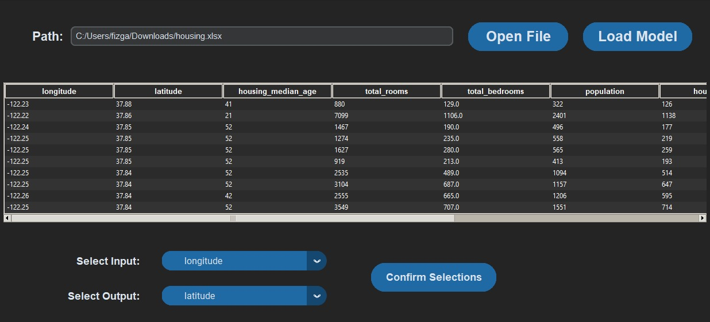
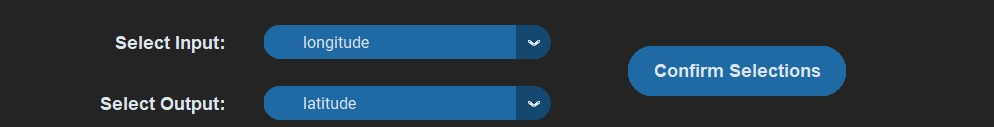
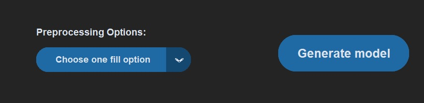
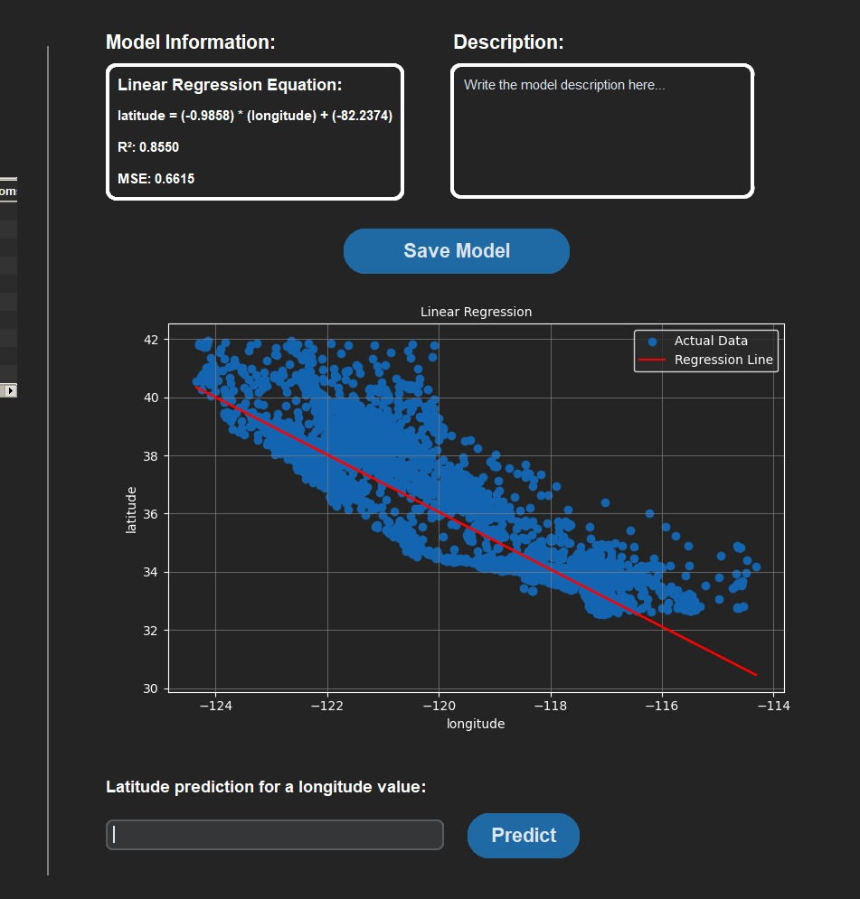
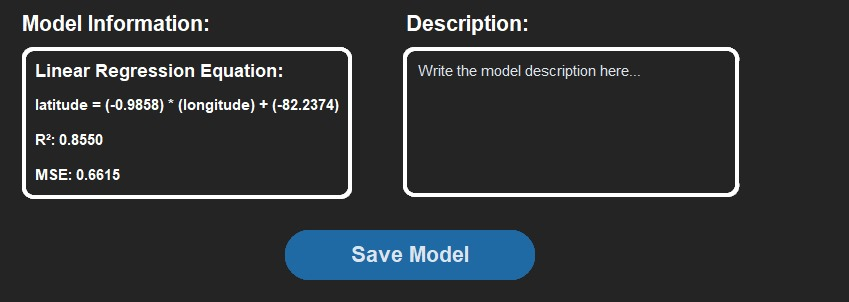
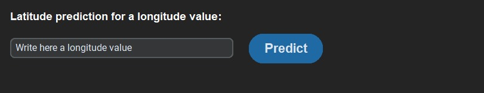
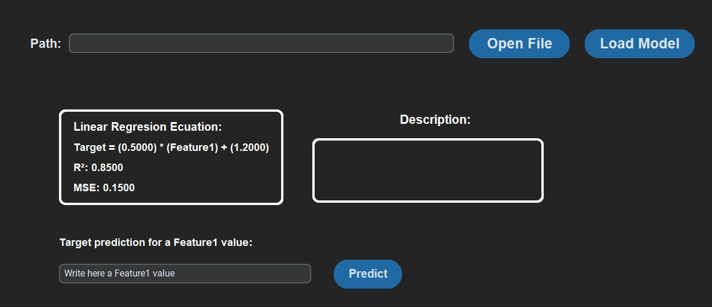
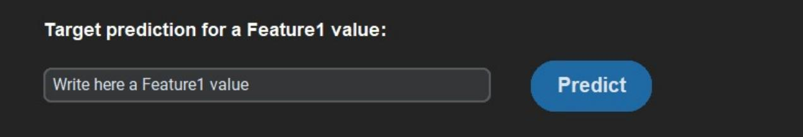

Functional Test Plan
2º Grado en Inteligencia Artificial
Grupo 1:
- Fiz Garrido
- Pablo Díaz
- Manuel Conde
- Yeyi Zheng
Ventana de presentación:
-La aplicación se inicializa con una ventana de presentación: ✅
-Pulsar botón de "Start": ✅
-Salta una aplicación con un botón para comenzar y una breve descripción del programa: ✅
Caso base:
-Pulsar el botón Start para comenzar el programa: ✅

Carga de datos (CSV, Excel, SQLite):
-Se muestra la ventana que aparece en pantalla: ✅
-Pulsar "Open file" para mostrar la base de datos seleccionada: ✅

Caso base:
-Aparece el explorador de archivos de la máquina local(con un filtro de archivos específicos): ✅
-Seleccionar el archivo que contiene la base de datos: ✅
-Una vez elegido, desaparece el explorador y aparece una nueva ventana con las funcionalidades de la ventana anterior, junto a una tabla que refleja los datos importados y un menú de selección de columnas de entrada y de salida: ✅
-Deberá aparecer la dirección de ruta del archivo seleccionado en la entrada a la izquierda del botón Open File: ✅

Casos especiales:
- Ejecución de “Open File” tras una anterior ejecución: Se vuelve a abrir el explorador y se lleva a cabo el mismo procedimiento para obtener como resultado final una ventana idéntica con los datos del nuevo archivo ✅
- Tras confirmar la selección de columnas: Ejecución y resultado idéntico con actualización de los datos según el archivo seleccionado ✅
- Tras selección de opciones de preprocesado: Ejecución y resultado idéntico con actualización de los datos según el archivo seleccionado ✅
- Tras la generación de un modelo de regresión lineal: Ejecución y resultado idéntico con actualización de los datos según el archivo seleccionado ✅
- Tras un guardado de modelo: Ejecución y resultado idéntico con actualización de los datos según el archivo seleccionado ✅
- Tras una predicción de un valor de salida: Ejecución y resultado idéntico con actualización de los datos según el archivo seleccionado ✅
- Tras la carga de un modelo almacenado en la máquina local: Ejecución y resultado idéntico con actualización de los datos según el archivo seleccionado ✅
- Tras la predicción de un modelo cargado: Ejecución y resultado idéntico con actualización de los datos según el archivo seleccionado ✅
Selección de columnas de entrada y salida:
Caso base:
-Se despliega el menú de columnas de entrada y de salida y seleccionar las que requiera: ✅
-Pulsar el botón Confirm Selections para aplicar dichas elecciones: ✅
-Aparecerá una ventana emergente con los nombres de dichas columnas: ✅
-Cerrar la ventana para continuar con el proceso: ✅

Casos especiales:
- Ejecución de la selección de las columnas tras una ejecución anterior: Mismo procedimiento y resultado ✅
- Tras elegir una opción de preprocesado: Mismo procedimiento y resultado (el filtrado no afecta a la nueva confirmación de selección ya que al pulsar el botón Confirm Selections la tabla se restablece con los datos originales) ✅
- Tras la generación de un modelo de regresión lineal: El procedimiento es el mismo ✅
- Tras un guardado de modelo: El procedimiento es el mismo ✅
- Tras la predicción de un valor de salida: El procedimiento es el mismo ✅
Manejo de errores:
Si una columna de las seleccionadas no pertenece a la base de datos actual o es un elemento None, saltará una ventana emergente de error con el correspondiente aviso, impidiendo el proceso ✅
Preprocesado de datos:
Caso base:
-Se despliega el menú de opciones de preprocesado y nos encontramos con 4 diferentes: ✅
- “Remove rows with NaN”: En el caso de que existan valores NaN en la columna de input y/o output, se elimina la fila que contenga dicho valor/es (aparecerá una ventana emergente indicándolo) ✅
- “File with mean”: En el caso de que existan valores NaN en la columna de input y/o output, se sustituye el valor NaN por la media de la columna ✅
- “File with median”: En el caso de que existan valores NaN en la columna de input y/o output, se sustituye el valor NaN por la mediana de la columna ✅
- “File with constant values”: En el caso de que existan valores NaN en la columna de input y/o output, se sustituye el valor NaN por otro aplicado manualmente en una ventana emergente ✅

Casos especiales:
- Elegir opción de preprocesado tras una elección anterior: Mismo procedimiento ✅
- Tras la generación de un modelo de regresión lineal: El procedimiento es el mismo ✅
- Tras un guardado de modelo: El procedimiento es el mismo ✅
- Tras la predicción de un valor de salida: El procedimiento es el mismo ✅
Manejo de errores:
Si alguna de las columnas contiene variables no numéricas, aparecerá una ventana emergente notificando el error, impidiendo la continuidad del proceso y pidiendo la sustitución de dicha columna/s ❌ (Tras la observación de la ausencia de esta funcionalidad, esta ha sido corregida e implementada ✅).
Creación del modelo de regresión lineal (visualización del gráfico y fórmula y métricas del modelo):
Caso base:
-Pulsar el botón Generate model: ✅
-Aparece una ventana emergente que indica la correcta generación del modelo y sus columnas de entrada y salida: ✅
-Cerrar la ventana para continuar con la ejecución del programa: ✅

Casos especiales:
- Generado de modelo tras una generación anterior: Mismo procedimiento (excepto que la ventana ya está dividida en dos) ✅
- Tras guardar un modelo: Desaparecen todas las funcionalidades de la parte derecha de la ventana para volver a ser generadas. Aparece una ventana emergente que indica que se generó correctamente el modelo e indica las columnas de entrada y de salida ✅
- Tras predicción de un valor de salida: Desaparecen todas las funcionalidades de la parte derecha de la ventana para volver a ser generadas. Aparece una ventana emergente que indica que se generó correctamente el modelo e indica las columnas de entrada y de salida ✅
Manejo de errores:
- - Si alguna de las columnas contiene variables no numéricas, aparecerá una ventana emergente notificando el error, impidiendo la continuidad del proceso y pidiendo la sustitución de dicha columna/s: ✅
- - Si alguna columna contiene algún valor NaN, aparecerá una ventana emergente de error que impedirá generar el modelo y animará al usuario a corregir y sustituir dichos valores NaN mediante el preprocesado: ✅
Guardado del modelo:
Caso base:
-Pulsar el botón Save Model para guardar el modelo generado: ✅
-Ejecutar para que se abra el explorador para guardar en nuestra máquina local un archivo .pkl (pickle): ✅
-Elegir un nombre para guardar el modelo que contendrá todos los atributos necesarios de nuestro modelo: ✅

Casos especiales:
- Guardado sin descripción: Mismo procedimiento, pero aparecerá una ventana emergente que nos avisará sobre la ausencia de descripción ✅
- Guardado tras la realización de una predicción de un valor de salida: Mismo procedimiento ✅
Predicción de un valor de salida del modelo generado:
Caso base:
-Introducir un valor numérico de la entrada seleccionada en la caja de texto: ✅
-Ejecutar el botón Predict:
-Aparece el valor de salida estimado: ✅

Manejo de errores:
Si introducimos un valor nulo o no numérico en la caja de texto aparecerá una ventana emergente notificando el error específico: ✅
Cargado de modelo de la máquina local:
Caso base:
-Ejecutar el botón de inicio: ✅
-Aparece la ventana inicial de la aplicación: ✅
-Se puede observar el botón Load Model: ✅
-Se abre el explorador de archivos con filtro para archivos pickle: ✅
-Elegir un archivo que contenga un modelo previamente guardado: ✅
Casos especiales:
- Para todos los casos posibles como carga de datos anterior, elegir opción de preprocesado, generar modelo, guardar modelo, etc: La ventana presente desaparece una vez se ejecuta Load Model para dar paso a la ventana del modelo cargado: ✅

Manejo de errores:
Si el archivo cargado contiene errores o no es un modelo de nuestra aplicación, aparecerá una ventana emergente notificando el error y impedirá el cargado del modelo: ✅
Predicción de un valor de salida del modelo cargado:
Caso base:
-Introducir un valor numérico de la entrada seleccionada en la caja de texto: ✅
-Ejecutar el botón Predict: ✅
-Aparece el valor de salida estimado: ✅

Manejo de errores:
Al introducir un valor nulo o no numérico en la caja de texto aparecerá una ventana emergente notificando el error específico: ✅
OBSERVACIONES:
Durante el proceso de revisión de pruebas funcionales han surgido varios problemas anteriormente no contemplados en el código, y han sido solventados con éxito.